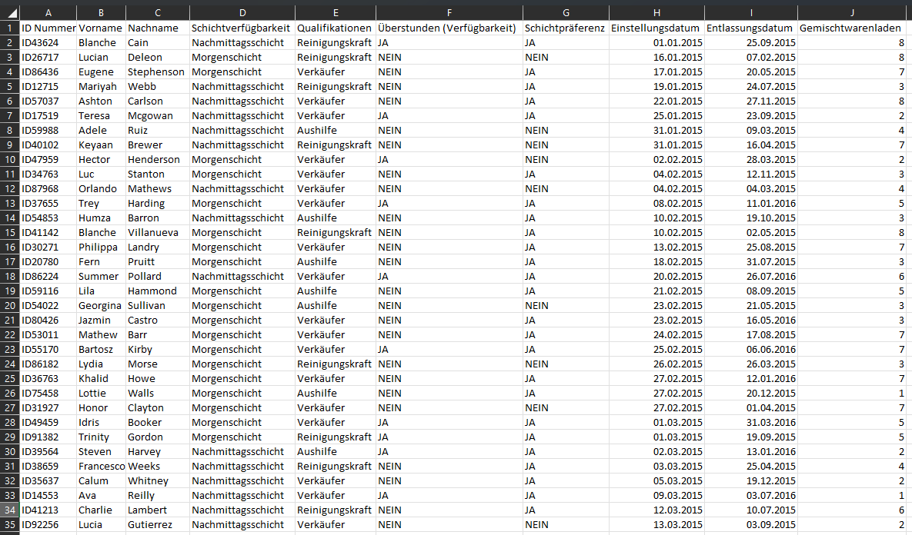
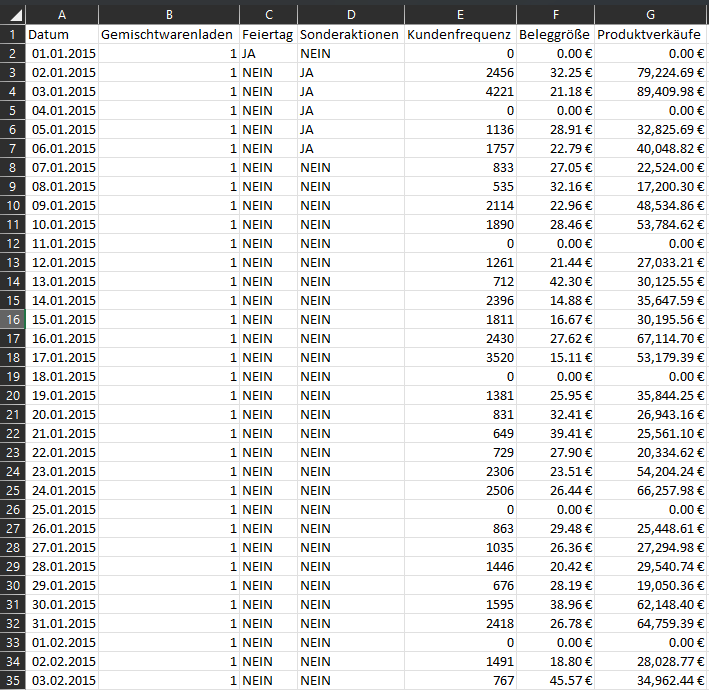
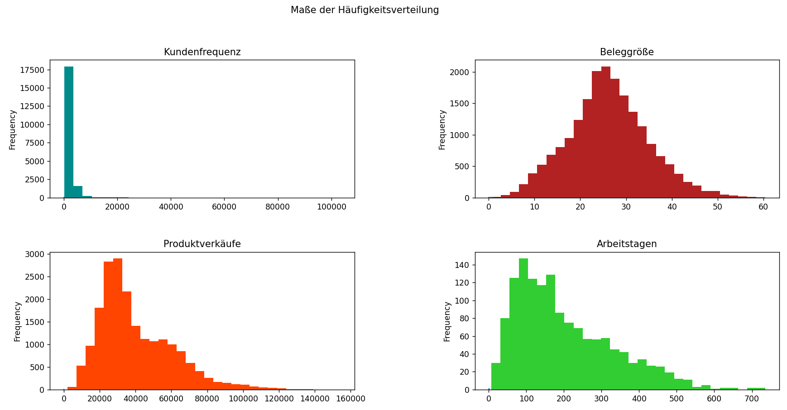
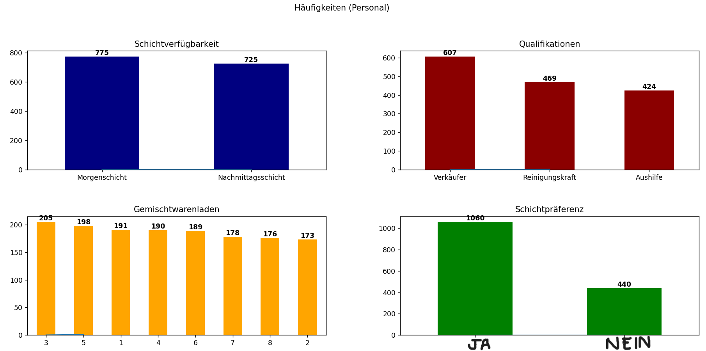
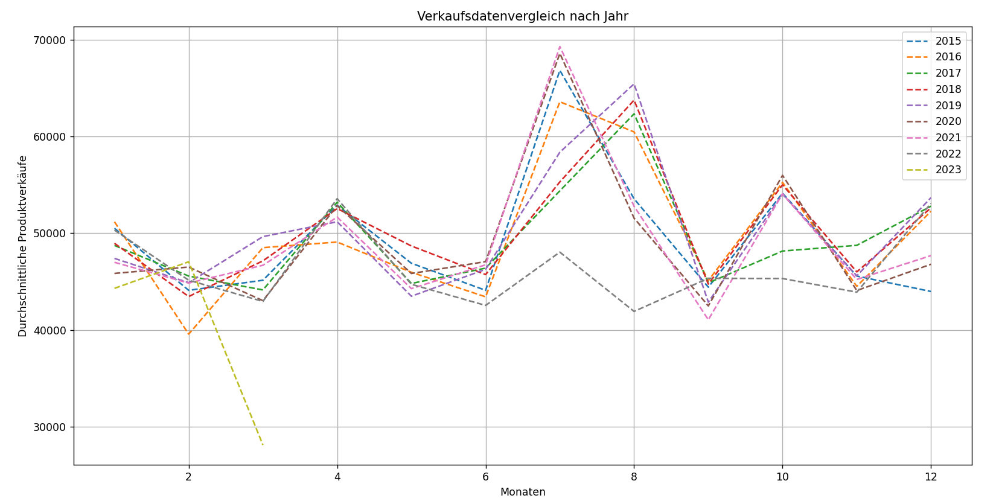
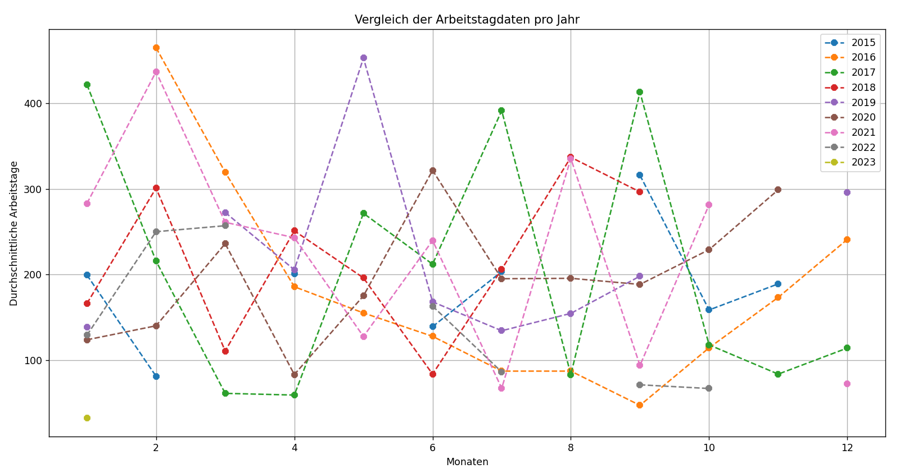
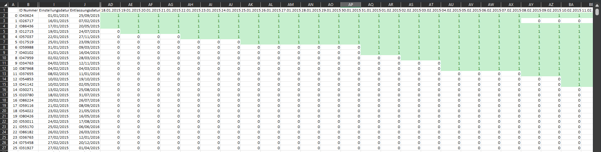
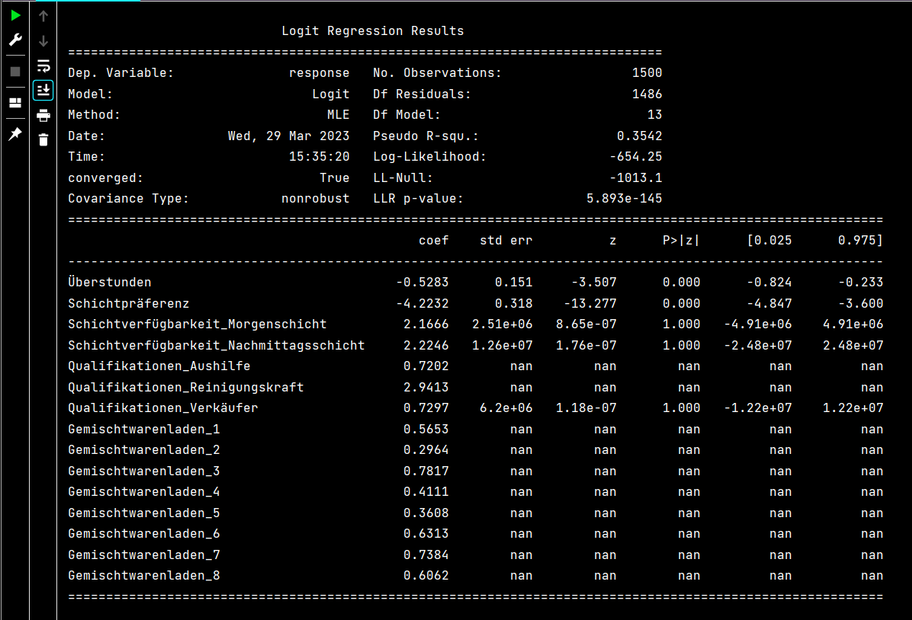

Anwendung der Personaleinsatzplanung und Retention-analyse des Personals in mehreren Convenience-Stores innerhalb
einer Stadt. Wie statistische Analyse- und Datenvisualisierungstechniken dabei helfen können, die Mitarbeiterbindung
vorherzusagen und Faktoren zu identifizieren, die zur Mitarbeiterfluktuation beitragen.
Ein aktuelles Phänomen, das in der Einzelhandelsbranche als „Big Quit“ bekannt ist, hat Unternehmen dazu
veranlasst, nach effektiveren Lösungen sowohl für den Geschäftsbetrieb als auch für die
Mitarbeiterzufriedenheit zu suchen. Traditionell haben sich Manager bei der Zuweisung von Ressourcen auf
Intuition und Erfahrung verlassen – ein Ansatz, der oft unzuverlässig und nicht immer optimal ist.
Aus diesem Grund setzen Einzelhandelsunternehmen zunehmend auf datengestützte Strategien zur Optimierung
des Personalmanagements. Durch die Analyse von Daten zu Mitarbeiterplanung, Verfügbarkeit und Leistung
wollen sie die Arbeitskosten senken, die Mitarbeiterbindung verbessern und den Kundenservice optimieren.
Workforce management (WFM)-Initiativen konzentrieren sich darauf, die Personalbesetzung an den
Geschäftsanforderungen und der Kundennachfrage auszurichten und gleichzeitig die Arbeitskosten zu
minimieren. Diese Projekte umfassen in der Regel den Einsatz von Planungsmodellen und Bindungsanalysen zur
Unterstützung operativer Entscheidungen.
Dank der Digitalisierung im Einzelhandel können komplexe Aufgaben wie die Personalplanung und die Prognose
der Mitarbeiterbindung nun mithilfe von Datenanalysen und Algorithmen des maschinellen Lernens optimiert
werden.
Die CRISP-DM Methodik bietet einen robusten Rahmen, den Datenwissenschaftler nutzen, um ihre
Projekte vom Verständnis des geschäftlichen Kontexts und der technischen Einschränkungen bis hin zur
Bewältigung komplexer Datenprobleme und der Bewertung der Ergebnisse zu steuern. Durch ein klares
Verständnis der Anforderungen der Einzelhandelsbranche in der ersten Phase von CRISP-DM können wichtige
Faktoren identifiziert und in umsetzbare Erkenntnisse für die Entwicklung praktischer Datenlösungen
umgesetzt werden.
Durch Datenanalyse können Muster in mitarbeiterbezogenen Daten aufgedeckt werden, die häufig im
Einzelhandel vorkommen. Gleichzeitig ermöglicht maschinelles Lernen eine adaptive Modellierung, sodass
Manager Zeitpläne in Echtzeit anpassen können. Diese Reaktionsfähigkeit stellt sicher, dass Mitarbeiter
dort eingesetzt werden, wo sie am dringendsten benötigt werden, wodurch Leerlaufzeiten reduziert, die
Effizienz gesteigert und die Mitarbeiterbindung positiv beeinflusst werden.
Dieses Projekt befasst sich mit zwei Kernzielen: Mitarbeiterplanung und
Analyse der Mitarbeiterbindung. Es verwendet simulierte Daten, die typische Merkmale des
Einzelhandels widerspiegeln. (Hinweis: Alle in diesem Projekt verwendeten Daten sind simuliert und nicht
repräsentativ für reale Daten.)
SCHRITTE 1: Verständnis der Industrie
I. Mitarbeiterplanung: Eine datengestützte Planung gewährleistet eine ausreichende
Personalausstattung, um den betrieblichen Anforderungen bei unterschiedlichen Arbeitsbelastungen gerecht zu
werden, und berücksichtigt gleichzeitig die Präferenzen und Verfügbarkeiten der Mitarbeiter. Dieser Ansatz
maximiert die Produktivität des Unternehmens, indem er sicherstellt, dass der richtige Mitarbeiter zur
richtigen Zeit verfügbar ist.
II. Analyse der Mitarbeiterbindung: Die Mitarbeiterbindung ist eine zentrale Herausforderung im
Einzelhandel. Die Analyse der Mitarbeiterbindung hilft dabei, die wichtigsten Faktoren zu identifizieren,
die zur Fluktuation beitragen, und unterstützt die Entwicklung gezielter Strategien, um die Fluktuation zu
reduzieren und die Mitarbeiterbindung langfristig zu verbessern.
Leistungskennzahlen (KPI): in diesem Projekt gehören die Fluktuations- und Bindungsraten sowie die
geschätzten Kosten, die mit Über- und Unterbesetzung verbunden sind. Eine hohe Fluktuation im Einzelhandel
erhöht nicht nur die Einstellungs- und Schulungskosten, sondern stört auch den Geschäftsbetrieb und mindert
die Servicequalität. Das bedeutet, dass effektive Strategien zur Mitarbeiterbindung sich direkt auf die
Rentabilität auswirken können.
Durch die Optimierung der Dienstpläne soll in diesem Projekt untersucht werden, ob es einen Zusammenhang
zwischen der Präferenz für bestimmte Schichten und der Fluktuation gibt und ob bestimmte Funktionen oder
Filialen einen unterschiedlichen Personalbedarf haben.
SCHRITTE 2: Verständnis der Daten
Dieses Projekt basiert auf Daten, die zwischen 2015 und 2023 in acht Convenience-Stores gesammelt wurden.
Vor der Implementierung datengesteuerter Planungslösungen muss sichergestellt werden, dass die verwendeten
Daten für das jeweilige Geschäftsproblem relevant sind.
In der Phase des Datenverständnisses liegt der Schwerpunkt auf der Identifizierung und Erfassung aller
Aktivitäten, die mit dem Problem in Zusammenhang stehen. Dies dient als Grundlage für die Erstellung des
endgültigen Datensatzes aus den verfügbaren Rohdaten. Zu den wichtigsten Aufgaben in diesem Schritt gehören
die Datenerfassung, die erste Untersuchung und die Bewertung der Datenqualität.
Das Projekt stützt sich auf die folgenden zwei Datenkategorien, die aus acht Convenience-Stores stammen.
Diese beiden Elemente bilden die Grundlage sowohl für die Planungsoptimierung als auch für die
Kundenbindungsanalyse:
HINWEIS: In diesem Projekt werde ich typische Datenqualitätsprobleme wie Anomalien oder fehlende
Werte nicht berücksichtigen, da alle Daten speziell für Simulationszwecke generiert wurden.

1. Mitarbeiterinformationen: Diese Attribute variieren je nach Mitarbeiter und umfassen die folgenden
Datenpunkte: + ID nummer + Schichtverfügbarkeit + Qualifikationen + Überstunden (Verfügbarkeit)
+ Schichtpräferenz + Einstellungsdatum + Entlassungsdatum + Gemischtwarenladen nummer
HINWEIS: Mitarbeiterinformationen sind für die Analyse der Mitarbeiterbindung und für die Verwaltung
der Präferenzen und Verfügbarkeiten der Mitarbeiter bei der Dienstplanerstellung unerlässlich. Diese
Informationen helfen uns dabei, wöchentliche Dienstpläne zu erstellen, die den Anforderungen des Geschäfts
gerecht werden und gleichzeitig die individuellen Präferenzen der Mitarbeiter berücksichtigen.
2. Filialelemente: Diese Elemente unterliegen ständigen Schwankungen und repräsentieren alle Vorgänge, die
innerhalb der Filiale stattfinden. + Datum + Gemischtwarenladen nummer + Feiertag + Große
Sonderaktionen + Kundenfrequenz + Beleggröße + Produktverkäufe
HINWEIS: Die Filialelemente sind entscheidend für das Verständnis der betrieblichen Unterschiede
zwischen den acht Convenience-Stores und dafür, wie Faktoren wie die Nachfrage in den Filialen sich auf die
Personalausstattung und die Mitarbeiterbindungsraten auswirken können. Es ist wichtig zu berücksichtigen,
dass alle Filialen an sechs Tagen in der Woche mit zwei Schichten pro Tag betrieben werden.
Abschließend möchte ich noch anmerken, dass die Daten zwar synthetisch sind, aber so konzipiert sind, dass
sie realistische Muster widerspiegeln, die in Workforce-Management-Projekten beobachtet werden, unter
anderem Fluktuationstrends und filialspezifische Nachfrageschwankungen.

SCHRITTE 3: Aufbereitung der Daten
Die Datenaufbereitung umfasst im Wesentlichen den Prozess der Anpassung der im vorherigen Schritt
extrahierten Informationen und der Umwandlung dieser Daten, um sie leichter bearbeiten zu können und die
Informationen übersichtlicher anzuordnen, damit Aspekte der Informationen wie Variablennamen, Datentypen,
fehlende Werte und sogar Datenverteilungen identifiziert werden können.
Datentypen spielen eine entscheidende Rolle bei der Datenaufbereitung und -exploration, da sie je nach dem
angegebenen Format zur Durchführung bestimmter Operationen verwendet werden. Im Fall des
Mitarbeiter-Datenrahmens haben wir es mit einer Reihe von Variablen zu tun, die zunächst in einem falschen
Datentyp eingelesen werden, wodurch die Variable falsch dargestellt wird und wir wichtige Aufgaben für die
Datentransformation nicht ausführen können. Aus diesem Grund wandeln wir die Datenspalten in besser
geeignete Datentypen um.
Personal data types:
ID Nummer object
Vorname object
Nachname object
Schichtverfügbarkeit object
Qualifikationen object
Überstunden object --> bool
Schichtpräferenz object --> bool
Einstellungsdatum object --> datetime64[ns]
Entlassungsdatum object --> datetime64[ns]
Gemischtwarenladen int64 --> object
Tage_zwischen float64
dtype: object
Bevor wir zum nächsten Schritt übergehen, betrachten wir zunächst die folgenden Aspekte der Daten, die die
Strukturierung der Datenauswertung beeinflussen werden.
--> 8 verschiedene Filialen
--> 87 Monate
--> 3 Arten von Stellen
--> 2 Arten von Arbeitsschichten
--> 1500 Mitarbeiter-IDs mit Einstellungs- und Kündigungsdaten
SCHRITT 4: Datenexploration und -visualisierung
Der erste Schritt der Datenanalyse beginnt nach der Datenaufbereitung, sobald der Datensatz bereinigt und
strukturiert ist. Die Hauptziele der Datenauswertung sind: 1. Verstehen, was in einem Datensatz enthalten
ist, 2. Seine Eigenschaften identifizieren, 3. Mögliche Beziehungen zwischen Datenelementen finden und 5.
Anomalien oder Muster entdecken. All dies geschieht durch die Generierung von „Metadaten”.
Dies wird durch die Generierung und Auswertung von Metadaten erreicht, bei denen es sich um strukturierte
Informationen handelt, die Daten beschreiben. Metadaten umfassen beschreibende, strukturelle, referenzielle
und statistische Elemente, die dazu dienen, durch das Verständnis der Art der Informationen ein mentales
Modell des Datensatzes zu erstellen.
In den meisten Fällen hilft uns die deskriptive Analyse dabei, die Eigenschaften eines Datensatzes
anhand von drei verschiedenen Messgrößen zu bestimmen::
1. Zentraler Tendenzwert (Durchschnitt, Median, Modus)
2. Variabilität (Standardabweichung, Spannweite, Interquartilsabstand)
3. Häufigkeit der Verteilung
Python bietet die describe() Funktion für die wichtigsten Maße der Zentralität und sogar einige Maße
der Variabilität, nachdem die folgenden Maße angepasst werden können:
+ Schiefe: Messen des Grades der Asymmetrie in einer Verteilung. (Je näher an Null, desto
symmetrischer die Verteilung.
+ Kurtosis: Messen der Ähnlichkeit mit einer Normalverteilung. (Je näher an 0, desto eher
folgt die Verteilung einer Normalverteilung.
+ Jarque-Bara test: Ein Hypothesentest, der sowohl Schiefe als auch Kurtosis berücksichtigt,
um die Hypothese zu überprüfen, dass die Daten aus einer Normalverteilung stammen.
count 23856.00 ---- 19808.00
mean 21.71 ---- 26.15
std 12.64 ---- 8.73
min 0.00 ---- 0.64
25% 14.53 ---- 20.6
50% 23.95 ---- 25.88
75% 30.15 ---- 31.55
max 60.44 ---- 60.44
skew -0.35 ---- 0.20
kurt -0.54 ---- 0.12
jarque-bera (p-value) 0.0000 ---- 0.0000
Name: Beleggröße, dtype: float64
Ergebnisse belegen, dass die Verteilung der Beleggröße einer Normalverteilung folgt.
TESTS FÜR NORMATIVE DATEN:
Eine Normalverteilung ist eine kontinuierliche Wahrscheinlichkeitsverteilung, die symmetrisch um ihren
Mittelwert verläuft, wobei sich die meisten Beobachtungen um den zentralen Peak gruppieren und die
Wahrscheinlichkeit der Werte symmetrisch abnimmt, je weiter sie sich vom Mittelwert entfernen. Dieses
Verhalten ermöglicht aussagekräftige Wahrscheinlichkeitsschätzungen und Vergleiche zwischen Datenpunkten.
Deskriptive Analysen zielen oft darauf ab, zu beurteilen, ob Daten einer normalen (Gaussian) Verteilung
nahekommen. Auf diese Weise können Standardisierungstechniken angewendet werden, die es ermöglichen,
Beobachtungen zu vergleichen und Wahrscheinlichkeiten über verschiedene Populationen hinweg zu berechnen.
Ohne Normalität werden die meisten statistischen Tests und Modelle plötzlich ungültig.
Die meisten statistischen Hypothesentests gehen davon aus, dass die Daten einer Glockenkurve folgen, was in
den meisten analysierten Datenbanken nicht der Fall ist. Aus diesem Grund sind Transformationstechniken wie
logarithmische, Quadratwurzel- oder Box-Cox-Transformationen entscheidend, um Daten so anzupassen, dass sie
normativen Verteilungen entsprechen.
HINWEIS: Bei der Arbeit mit linearen Modellen wie LDA, Gaußscher Naive Bayes, logistischer
Regression, linearer Regression usw. sollten Sie zunächst die Datenverteilung messen und sicherstellen,
dass alle im Modell verarbeiteten Daten einer Normalverteilung nahekommen, da alle Modelle explizit unter
der Annahme berechnet werden, dass die Verteilung eine bivariate oder multivariate Normalverteilung ist.
Bei der Durchführung einer explorativen Datenanalyse (besser bekannt als EDA) ist es wichtig, die im
Datensatz vorhandenen Datentypen zu berücksichtigen. Variablen können numerisch (kontinuierlich/diskret)
oder kategorial (ordinal/nominal) sein, und diese Unterscheidung wirkt sich darauf aus, wie jedes Merkmal
analysiert wird.
Ein gutes Beispiel dafür ist, dass kontinuierliche Variablen am besten durch statistische Verteilungen
zusammengefasst werden, während kategoriale Variablen Häufigkeitszählungen und Kontingenztafeln erfordern.
Dies trägt dazu bei, die richtige Auswahl visueller und statistischer Methoden in der späteren
Modellierungsphase sicherzustellen (was ich in den folgenden Abschnitten demonstrieren werde).

DATEN VISUALISIERUNG
Dank der Datenvisualisierung können viele statistische Annahmen schnell validiert werden, basierend darauf,
wie sich die Daten in verschiedenen Diagrammen und Grafiken darstellen. Visualisierungsmethoden wie
Histogramme, Boxplots und Streudiagramme helfen dabei, die Form, Streuung und Muster in den Daten zu
verstehen.
Beispielsweise zeigen frühere Balkendiagramme die unterschiedlichen Verteilungen von Ladenumsätzen,
Kundenfrequenz, Rechnungsbeträgen und Mitarbeiterbindungsdauer. Diese visuellen Hinweise erleichtern das
Verständnis der Leistungskennzahlen und helfen, Anomalien frühzeitig zu erkennen.

Bei der Analyse kategorialer Daten ist es wichtig, auf Klassenungleichgewichte zu achten. Wenn eine Klasse
über- oder unterrepräsentiert ist, werden Vorhersagemodelle oft verzerrt, was die Genauigkeit und
Interpretierbarkeit beeinträchtigt. In dem Fall weist der Mitarbeiterdatensatz relativ ausgewogene
Stichprobengrößen für die meisten kategorialen Merkmale auf, was für faire Vergleiche und ein robustes
Modelltraining wichtig ist.
Im Fall der Personaldaten können wir die Stichprobengrößen für die wichtigsten kategorialen Daten
identifizieren, die die Bindung beeinflussen. In diesem Fall sind die Stichprobengrößen für fast alle
kategorialen Daten nahezu gleich. Das ist wichtig, da gleiche Stichprobengrößen dazu beitragen,
sicherzustellen, dass beobachtete Unterschiede zwischen den Kategorien nicht einfach auf Zufall
zurückzuführen sind. So lässt sich leichter feststellen, ob beobachtete Unterschiede statistisch
signifikant sind oder einfach auf die Zufälligkeit des Stichprobenverfahrens zurückzuführen sind.
import pandas as pd
import seaborn as sns
import matplotlib.pyplot as plt
from pyscript import display
df = pd.read_csv("corr_matrix_v2.csv", header=0, index_col=0)
fig, ax = plt.subplots()
sns.heatmap(df, annot=False, cmap="Oranges", ax=ax)
ax.set_title("Pearson Korrelationsanalyse (Mitarbeiter-Data)")
display(fig, target="heatmap")
Ein weiteres wichtiges Instrument bei der Datenauswertung ist die Korrelationsanalyse, beispielsweise die
Pearson-Korrelation, die die Stärke und Richtung linearer Beziehungen zwischen Variablenpaaren
quantifiziert. Das Verständnis von Korrelationen ist für die prädiktive Modellierung unerlässlich, um
Multikollinearität zu vermeiden und die einflussreichsten Prädiktoren zu identifizieren.
Im Falle der Mitarbeiterbindungsanalyse ist eine der wichtigsten Variablen die Beschäftigungsdauer,
gemessen als Zeit zwischen Einstellungs- und Kündigungsdatum. Das Verständnis, welche Variablen mit
längeren oder kürzeren Beschäftigungszeiten korrelieren, liefert umsetzbare Erkenntnisse über die Dynamik
der Belegschaft und könnte Managern sogar helfen, zu verstehen, welche Faktoren in den letzten 87 Monaten
der Datenerfassung den größten Einfluss auf die Mitarbeiterbindung hatten.
Gemäß der Pearson-Korrelationsmatrix sind die relevantesten Variablen für die Mitarbeiterbindung:
Schichtpräferenz 55.5059% (Qualifikationen) Reinigungskraft -41.5935% (Qualifikationen) Verkäufer 21.7596%
Es ist auch sinnvoll, die Multikollinearität zwischen unabhängigen Variablen zu bewerten. Hohe
Korrelationen zwischen Prädiktoren können die Varianz in Modellschätzungen erhöhen und den individuellen
Einfluss jeder Variablen verschleiern. Bei starker Multikollinearität ist es wichtig, redundante Merkmale
vor der Modellentwicklung zu filtern.
Für die Retentionsanalyse problem müssen wir ein Vorhersagemodell entwickeln und trainieren, das die
Faktoren berücksichtigt, die zur Mitarbeiterfluktuation beitragen. Bevor eine Vorhersagemodellierung
durchgeführt werden kann, muss auch die Saisonalität getestet werden, d. h. wiederkehrende Muster, die auf
bestimmten Zeitintervallen basieren. Die Saisonalität kann in einigen Bereichen einen erheblichen Einfluss
auf den Personalbedarf haben.

Saisonalitätstests suchen nach periodischen Schwankungen innerhalb historischer Daten oder Zyklen, die
regelmäßig zu einer bestimmten Jahreszeit auftreten. Eine Jahreszeit kann mit einer Kalenderjahreszeit
(Sommer oder Winter) in Verbindung stehen oder sich auf eine Ferienzeit beziehen.
Durch den Vergleich zweier Arten historischer Daten – Ladenumsätze und Beschäftigungsdauer – stellen wir
fest, dass die Umsätze über einen Zeitraum von 87 Monaten deutliche saisonale Spitzen aufweisen. Die
Beschäftigungsdauer zeigt jedoch keine solche Periodizität. Dies deutet darauf hin, dass für der Problem
der Mitarbeiterbindung Saisonaltests nicht anwendbar sind, da die Einstellungs- und Fluktuationsmuster
keinen saisonalen Trends folgen.

SCHRITTE 5: Entwicklung von Merkmalen
Um mit dem nächsten Schritt fortzufahren, müssen wir die Daten für die weitere Analyse aufbereiten. Dazu
können Aufgaben wie die Normalisierung oder Standardisierung von Variablen, die Erstellung neuer Variablen
auf der Grundlage bestehender Variablen oder die Reduzierung der Dimensionalität der Daten gehören. Auf
diese Weise können wir die Leistung der Modelle erheblich verbessern.
Ein weiterer wesentlicher Aspekt des Feature Engineering ist die Umwandlung kategorialer Variablen in
numerische Darstellungen. Dies geschieht in der Regel durch die Erstellung von Dummy-Variablen, die es uns
ermöglichen, den Einfluss jeder Kategorie auf die Antwortvariable zu erfassen, indem wir ihre jeweiligen
Koeffizienten in einem Regressionsmodell vergleichen.
Für das Regressionsmodell zur Fluktuationsanalyse verwenden wir Daten auf Mitarbeiterebene mit
Dummy-Variablen, die aus kategorialen Spalten wie Qualifikationen, Schichtpräferenz, Schichtverfügbarkeit
und Überstundenverfügbarkeit generiert wurden. Diese transformierten Variablen ermöglichen es uns, zu
quantifizieren, wie verschiedene Attribute die Beschäftigungsdauer oder die Wahrscheinlichkeit einer
Fluktuation beeinflussen.
Bei einem -MITARBEITERPLANUNGSPROBLEM- ist es wichtig, die Verfügbarkeit der Mitarbeiter auf einer
sehr detaillierten Ebene zu berücksichtigen. In dem Modell bedeutet dies, dass nach Convenience-Store,
Schichttyp, Rollen und bestimmten Daten unterschieden werden muss.
Um die Beschäftigungsdauer eines Mitarbeiters in einen für das Planungsmodell nutzbaren Datumsbereich
umzuwandeln, müssen wir einen vollständigen Zeitplan für die Verfügbarkeit extrahieren. Die Verfügbarkeit
jedes Mitarbeiters sollte als tägliche Abfolge zwischen seinem Start- und Enddatum dargestellt werden,
damit der Planungsalgorithmus genau weiß, wann jeder Mitarbeiter für Schichten eingeteilt werden kann.
# Python CODE: ENTWICKLUNG VON MERKMALEN
Diese Codezeilen generieren Hunderte von Spalten mit Binärwerten zwischen den Daten 2015 und 2023, um
die Verfügbarkeit der Mitarbeiter während dieser Zeiträume darzustellen. staff_model['date_range'] = staff_model.apply(lambda row: pd.date_range(start=row['Einstellungsdatum'],
end=row['Entlassungsdatum'], freq='D'), axis=1)
datumsbereich = pd.date_range(start="01/01/2015", end="31/03/2023", freq='D')
for date in datumsbereich:
staff_model[date.strftime('%d.%m.%Y')] = staff_model['date_range'].apply(lambda x: 1 if date in x else 0)
staff_model.drop('date_range', axis=1, inplace=True)
Die folgenden Codezeilen löschen alle Daten, die Feiertage und Sonntage darstellen, an denen die
Geschäfte geschlossen sein sollen und kein Personal benötigt wird. date_filter = store_retention[store_retention.Datum.dt.weekday == 6]
date_filter = date_filter[date_filter["Feiertag"] != 1]
date_list = list(date_filter["Datum"])
date_list_str = [date.strftime('%Y-%m-%d %H:%M:%S') for date in date_list]
date_list = [datetime.datetime.strptime(date, '%Y-%m-%d %H:%M:%S').strftime('%d.%m.%Y') for date in date_list_str]
Zeitbasierte Merkmale sind sowohl im Retentions- als auch im Planungsmodell von entscheidender Bedeutung.
Sie können dabei helfen, Muster zu erkennen, z. B. dass Mitarbeiter nach einer bestimmten Dauer eher
kündigen oder dass bestimmte Schichten an bestimmten Wochentagen unterbesetzt sind.
Die Identifizierung anderer Arten von Wechselwirkungen zwischen kategorialen und numerischen Variablen kann
die Vorhersagekraft des Bindungsmodells erhöhen. Beispielsweise kann die Kombination von Schichtpräferenzen
mit geleisteten Überstunden wichtige Dynamiken in Bezug auf Stress oder Burnout bei Mitarbeitern aufzeigen,
die sich direkt auf die Fluktuationsrate auswirken. Diese Wechselwirkungen können manuell konstruiert oder
während des Modelltrainings über baumbasierte Modelle erkannt werden.

SCHRITTE 6: Aufbau von Modellen
Das Hauptziel des Projekts dreht sich um die Modellierung und das Training. Im Rahmen dieses Projekts
werden wir zwei verschiedene Arten von Modellen entwickeln: ein Optimierungsmodell für die
Mitarbeiterplanung und ein logistisches Regressionsmodell für die Analyse der Mitarbeiterbindung.
Für das Problem der Mitarbeiterplanung verwenden wir die PuLP-Bibliothek, ein Python-basiertes
Toolkit für lineare Programmierung, das sich auf die Definition von Entscheidungsvariablen, Einschränkungen
und einer Zielfunktion für ein Optimierungsmodell konzentriert. Das Optimierungsmodell von PuLP bietet
ausreichend Flexibilität, um komplexe Probleme der Personalzuweisung im Rahmen der linearen Programmierung
zu lösen.
Die lineare Programmierung eignet sich besonders für die Optimierung der Mitarbeiterplanung, da sie
quantitative Entscheidungen ermöglicht und gleichzeitig sicherstellt, dass wichtige betriebliche und
personelle Einschränkungen berücksichtigt werden, insbesondere durch die Verwendung der binären
ganzzahligen linearen Programmierung, bei der Entscheidungsvariablen die Werte 0 oder 1 annehmen, um eine
Zuweisung oder Nichtzuweisung anzuzeigen.
Die lineare Programmierung ist eine mathematische Modellierungstechnik, die eine Reihe von
Eingabebeschränkungen innerhalb der quantitativen Entscheidungsfindung bei der Mitarbeiterplanung
berücksichtigt. Im Fall dieses Problems der Mitarbeiterplanung berücksichtigen wir die folgenden
Einschränkungen: 1. Schichtpräferenzen 2. Arten von Stellen 3. Maximale Anzahl
aufeinanderfolgender Arbeitstage des Mitarbeiter.
Die Übersetzung der Entscheidungsvariablen, die wir durch die Schritte „Datenverständnis“,
„Datenaufbereitung“, „Datenexploration“ und „Feature Engineering“ erhalten haben, ergibt die folgenden
Bezeichnungen: xe,s,d ∈ {0, 1} sind die binäre Entscheidungsvariable e ∈ E: Menge der Mitarbeiter s ∈ S: Menge der Schichttypen (z.B. “Morgenschicht”, “Nachmittagsschicht”) d ∈ D: Menge der Daten
Die Zielfunktion des Mitarbeiterplanungsmodells ist darauf ausgelegt, die Gesamtpräferenzzufriedenheit der
Belegschaft zu maximieren. Jeder Mitarbeiter hat eine erklärte oder abgeleitete Schichtpräferenz – in der
Regel zwischen „Morgenschicht” und „Nachmittagsschicht”. Diese Präferenzen werden als binäre Werte kodiert,
wobei der Wert 1 bedeutet, dass ein Mitarbeiter für diese Schicht verfügbar oder bereit ist, sie zu
arbeiten, und 0 das Gegenteil.
# Python CODE: Aufbau von Modellen (Modell zur Optimierung der Mitarbeiterplanung) opt_prob = plp.LpProblem("Employee Scheduling", plp.LpMinimize)
personal = staff_df['ID Nummer'].tolist()
schichtverfugbarkeit = staff_df['Schichtverfügbarkeit'].unique().tolist()
qualifikationen = staff_df['Qualifikationen'].unique().tolist()
datum = datumsbereich.strftime('%d.%m.%Y').tolist()
datum = [x for x in datum if x not in date_list]
x = plp.LpVariable.dicts("x", [(a, b, c) for a in personal for b in schichtverfugbarkeit for c in
datum], cat='Binary')
opt_prob += plp.lpSum([x[(a, b, c)] for a in personal for b in schichtverfugbarkeit for c in datum])
for c in datum:
for b in schichtverfugbarkeit:
opt_prob += plp.lpSum([x[(a, b, c)] for a in personal]) >= staff_df[staff_df[
'Schichtverfügbarkeit'] == b][d].sum()
for d in qualifikationen:
opt_prob += plp.lpSum([x[(a, c, c)] for a in personal if staff_df.loc[staff_df
['ID Nummer'] == a, 'Qualifikationen'].item() == d]) >= \
staff_df[(staff_df['Schichtverfügbarkeit'] == b) & (staff_df[c] == 1) &
(staff_df['Qualifikationen'] == d)][c].sum()
for a in personal:
for i in range(len(datum) - 4):
opt_prob += plp.lpSum([x[(a, b, datum[j])] for j in range(i, i + 5) for b in
schichtverfugbarkeit]) <= 5
opt_prob.solve()
Das Modell summiert dann die Anzahl der Zuweisungen, die diesen Präferenzen über alle Mitarbeiter,
Schichten und Tage hinweg entsprechen. Dies führt zu einer Optimierungsfunktion, die nicht nur die
erforderlichen Positionen besetzt, sondern auch versucht, die Präferenzen der Mitarbeiter so weit wie
möglich zu berücksichtigen, was zu einer höheren Zufriedenheit und möglicherweise zu einer besseren
Mitarbeiterbindung beitragen kann.
Das Optimierungsmodell maximiert die Gesamtzufriedenheit mit den Schichtpräferenzen und gibt Mitarbeitern,
die in ihren bevorzugten Schichten arbeiten, Vorrang. Mathematisch lässt sich dies wie folgt darstellen:
Maximize Z = ∑(e ∈ E) ∑(s ∈ S) ∑(d ∈ D) pe,s × xe,s,d Wenn pe,s ∈ {0,1}: preference score = 1 wenn Mitarbeiter e eine
Präferenz für den Schicht hat oder nichts, Anderfalls 0.
Einschränkung für eine Schicht pro Tag: ∑(s ∈ S) xe,s,d ≤ 1 ∀ e ∈ E, ∀ d ∈ D
Einschränkung für maximal 5 aufeinanderfolgende Arbeitstage Einschränkung ∑(i=0 to 5) ∑(s ∈ S) xe,s,di ≤ 5 for any 6-day window
Einschränkung für qualifiziertes Personal ∑(e ∈ Eq) xe,s,d ≥ 1 if Eq exists for shift s on day d
Domain Constraints xe,s,d ∈ {0, 1}
Das mathematische Modell berücksichtigt die folgenden Einschränkungen: -> Einschränkung 1: Eine Schicht pro Tag
Um Gerechtigkeit und Praktikabilität zu gewährleisten, garantiert die erste Einschränkung, dass kein
Mitarbeiter mehr als einer Schicht pro Tag zugewiesen wird. Dies verhindert Überlastung und
Terminkonflikte. Für jeden Mitarbeiter und jeden Tag überprüft das Modell alle möglichen Schichten und
stellt sicher, dass die Summe der Zuweisungsvariablen nicht größer als eins ist.
-> Einschränkung 2: Maximal 5 aufeinanderfolgende Arbeitstage
Die zweite Einschränkung dient dem Wohlbefinden der Mitarbeiter, indem sie die Anzahl der
aufeinanderfolgenden Tage begrenzt, an denen ein Mitarbeiter zur Arbeit eingeteilt werden kann. Dadurch
wird verhindert, dass eine Sechstagewoche entsteht.
-> Einschränkung 3: Anforderung an qualifizierte Mitarbeiter
Diese Einschränkung stellt sicher, dass jede Schicht an jedem Tag mit mindestens einem Mitarbeiter besetzt
ist, der über die erforderlichen Qualifikationen verfügt. Beispielsweise können bestimmte Schichten eine
„Reinigungskraft”, eine „Aushilfe” oder einen „Verkäufer” erfordern. Das Modell überprüft für jede
Schicht-Tag-Kombination, ob mindestens ein Mitarbeiter mit der erforderlichen Qualifikation verfügbar ist,
und weist ihn entsprechend zu.
HINWEIS: Wenn kein qualifizierter Mitarbeiter verfügbar ist, wird die Einschränkung automatisch
übersprungen, um eine Unmöglichkeit zu vermeiden. Diese selektive Durchsetzung garantiert die
Betriebskontinuität, ohne die Lösbarkeit des Modells zu beeinträchtigen.
Nachdem das Modell zur Mitarbeiterplanung nun ohne Probleme läuft, ist es an der Zeit, mit dem logistischen
Regressionsmodell für die Analyse der Mitarbeiterbindung zu beginnen. Das Ziel dieses Modells ist
es, Muster in den Merkmalen der Mitarbeiter aufzudecken, die mit einer kürzeren oder längeren
Betriebszugehörigkeit korrelieren, um dem Management fundierte Entscheidungen über Einstellungs-,
Schulungs- und Planungsrichtlinien zu ermöglichen. Die logistische Regression eignet sich besonders gut für
diese Aufgabe, da sie anhand einer Kombination von Eingabevariablen die Wahrscheinlichkeit abschätzen kann,
mit der ein Mitarbeiter in ein binäres Ergebnis fällt – langfristig im Unternehmen verbleibt oder nicht.
Das logistische Regressionsmodell schätzt die Wahrscheinlichkeit, mit der ein Mitarbeiter das Unternehmen
verlässt, anhand der Werte der unabhängigen Variablen. Das Modell liefert auch Informationen über die
Stärke und Richtung der Beziehung zwischen jeder unabhängigen Variablen und der Mitarbeiterbindung.
Das logistische Regressionsmodell basiert auf einer binären Antwortvariablen namens „response”, die angibt,
ob ein Mitarbeiter weniger als die durchschnittliche Beschäftigungsdauer aller Mitarbeiter im Unternehmen
geblieben ist. Liegt die Gesamtzahl der Tage zwischen Einstellung und Kündigung (Tage_zwischen) unter dem
Mittelwert des Datensatzes, wird die Antwort auf 1 gesetzt, andernfalls auf 0.
Diese binäre Kodierung ermöglicht es dem Modell, die Mitarbeiter in zwei Gruppen einzuteilen, und
ermöglicht es dem logistischen Regressionsalgorithmus, Odds Ratios für jede Prädiktorvariable zu berechnen,
die die Wahrscheinlichkeit einer kürzeren Betriebszugehörigkeit darstellen.
# Python CODE: AUFBAU VON MODELLEN (Mitarbeiterbindung Logistik-Regressionsmodell) import statsmodels.api as sm
import pandas as pd
Prädiktorvariable: Überstunden
Eine der einflussreichsten Merkmale ist „Überstunden“, die angibt, ob der Mitarbeiter bereit ist,
Überstunden zu leisten. Die Einbeziehung dieser Variable hilft dabei, ihre tatsächliche Rolle im
Fluktuationsverhalten aufzudecken.
Prädiktorvariable: Schichtpräferenz
Diese binäre Variable gibt an, ob ein Mitarbeiter flexibel ist, was die Arbeit in verschiedenen
Schichttypen angeht. Diese Variable ist entscheidend für die Bewertung, ob die Vereinbarkeit der
Arbeitszeiten Einfluss auf die Mitarbeiterbindung hat.
Prädiktorvariable: Schichtverfügbarkeit, Qualifikationen, and Gemischtwarenladen
Weitere Prädiktoren sind One-Hot-codierte Darstellungen der Schichtverfügbarkeit, der Qualifikationsart und
des Standortes jedes Mitarbeiters. Diese Merkmale erfassen feste persönliche Eigenschaften und kontextuelle
Faktoren, die sich unterschiedlich auf die Mitarbeiterbindung auswirken können. Beispielsweise könnten
Mitarbeiter in geschäftigeren Filialen oder mit einer bestimmten Art von Funktion eher dazu neigen,
frühzeitig zu kündigen.
Die statistische Modellierung erfolgt mit der Python-Bibliothek statsmodels, die eine robuste und
transparente Schnittstelle für die Anpassung generalisierter linearer Modelle, einschließlich logistischer
Regression, bietet. Die Funktion Logit() aus statsmodels.api wird zum Aufbau des Modells verwendet, und
.fit() wird aufgerufen, um die Koeffizienten mit Hilfe der Maximum-Likelihood-Schätzung zu schätzen.
Statsmodels erstellt eine detaillierte Zusammenfassung, die p-Werte, Konfidenzintervalle, Odds Ratios,
Standardfehler und Wald-Teststatistiken enthält.
Diese Ausgabe ist von unschätzbarem Wert, um zu verstehen, welche Variablen einen signifikanten Einfluss
auf die Mitarbeiterbindung haben und wie stark diese Effekte sind, über einen einfachen Korrelationstest
hinaus. Die Ergebnisse unterstützen auch die Entscheidungsfindung des Managements, indem sie
Modellkoeffizienten in für Menschen lesbare Erkenntnisse übersetzen. Zur Leistungsvalidierung werden
zusätzliche Bewertungsmetriken wie Genauigkeit, Präzision, Recall und F1-Score mit sklearn berechnet, um
sicherzustellen, dass das Modell nicht nur statistisch, sondern auch in Bezug auf die Vorhersagegenauigkeit
gut funktioniert.
Logit() definiert das logistische Regressionsmodell
.fit() schätzt die Koeffizienten mittels Maximum Likelihood
.summary() liefert einen vollständigen statistischen Bericht, einschließlich:
SCHRITTE 7: Modellbewertung und -vergleich
Dank der Vorbereitung und Transformation der Daten in den vergangenen Schritten konnten wir durch den
Prozess der Modellbewertung die folgenden Leistungskennzahlen für jedes Modell erhalten:
Optimierungsmodell: Anhand der Ergebnisse des Optimierungsmodells (Status: Optimal) können wir sehen, dass die
Anpassung der Zeitpläne innerhalb der verfügbaren Ressourcen möglich ist, wenn der Personalbedarf minimal
ist (1 für jede Rolle).
Das Optimierungsmodell ist für die Verarbeitung von 502.843 eindeutigen Einschränkungen
(einschließlich Einschränkungen hinsichtlich der Schichtdauer) ausgelegt und verfügt über bis zu 970.280
Entscheidungsvariablen (ganzzahlige Auswahlmöglichkeiten), wobei jede Variable angibt, ob ein Mitarbeiter
einer bestimmten Schicht an einem bestimmten Datum zugewiesen ist, sowie über bis zu 6.658.926 Elemente.
In diesem Fall ist das Mitarbeiterplanungsmodell in der Lage, zu verwalten, welche Mitarbeiter für jeden
Tag und jede Schicht in jedem Geschäft verfügbar sind, und gleichzeitig sicherzustellen, dass die
Einschränkungen eingehalten werden.
Diese Ergebnisse belegen, dass die Anzahl der während jedes Zeitraums
verfügbaren Mitarbeiter ausreicht, um den Betrieb aller Geschäfte innerhalb der Stadt für insgesamt 87
Monate (ohne Feiertage und Sonntage) aufrechtzuerhalten.
LOGISTIC REGRESSION MODEL:
Wie bereits erwähnt, ermöglicht uns das logistische Regressionsmodell, die Variablen zu identifizieren, die
den größten Einfluss auf die Mitarbeiterbindung haben. Anstatt einfach nur zu klassifizieren, ob ein
Mitarbeiter innerhalb eines bestimmten Zeitraums das Unternehmen verlassen wird, schätzt das Modell die
Wahrscheinlichkeit der Fluktuation auf der Grundlage mehrerer Merkmale.
Anhand der Ergebnisse des logistischen Regressionsmodells können wir ermitteln, welche Variablen den
größten Einfluss auf die Mitarbeiterbindung haben, da wir nicht einfach vorhersagen, ob ein Mitarbeiter das
Geschäft innerhalb eines bestimmten Zeitraums verlassen wird, sondern die Wahrscheinlichkeit schätzen, dass
er das Unternehmen verlassen wird.
Die Ausgabe eines logistischen Regressionsmodells umfasst eine Zusammenfassung der Modellkoeffizienten und
andere Statistiken, die zur Bewertung der Modellleistung und zur Interpretation der Ergebnisse verwendet
werden können. Zwei der wichtigsten Kennzahlen sind die Regressionskoeffizienten (coef) und die zugehörigen
p-Werte (P>|z|).

Ein positiver Koeffizient zeigt an, dass ein Anstieg der entsprechenden Prädiktorvariable die
logarithmische Wahrscheinlichkeit eines vorzeitigen Ausscheidens des Mitarbeiters erhöht, während ein
negativer Koeffizient auf einen Rückgang dieser Wahrscheinlichkeit hindeutet. In unserem Modell weisen
Variablen wie „Schichtpräferenz“ und „Überstunden“ eine starke negative Korrelation mit der
Mitarbeiterfluktuation auf, was bedeutet, dass sie die Wahrscheinlichkeit eines vorzeitigen Austritts
verringern.
Ebenso bedeutet ein positiver Koeffizient für „Qualifikationen_Reinigungskraft“, dass Beschäftigte mit
Reinigungsaufgaben eher bereit sind, vorzeitig zu gehen. Der mit jedem Koeffizienten verbundene p-Wert
misst die statistische Signifikanz. Kleinere p-Werte deuten darauf hin, dass die Variable einen bedeutenden
Einfluss auf die Antwortvariable hat. In unserem Fall weisen einige Variablen - wie „Schichtverfügbarkeit“
- keine statistische Signifikanz auf, was darauf hindeutet, dass sie möglicherweise nur einen begrenzten
Einfluss auf die Ergebnisse der Mitarbeiterbindung haben.
# Python Output für die Optimization modell: Welcome to the CBC MILP Solver
Version: 2.10.3
Build Date: Dec 15 2019
Result - Optimal solution found
End time: 996.1563172340393
Status: Optimal
Total Cost = 33263.0
# Python Output for Regression model: Optimization terminated successfully.
Current function value: 0.425496
Iterations 11
Accuracy: 0.79
Precision: 0.8841463414634146
Recall: 0.7671957671957672
F1 Score: 0.8215297450424929
SCHRITTE 8: Modellverbesserung
Im Falle eines OPTIMIERUNGSMODELLS lässt sich ein LP-Modell am besten dadurch verfeinern, dass man
sich ansieht, was dem aktuellen Modellrahmen fehlt. Das bedeutet im Allgemeinen eine weitere Annäherung an
die reale Welt und eine geringere Abhängigkeit von Annahmen.
Da lineare Annahmen in der Regel Annäherungen an eine optimierte Lösung sind, kommt die
Sensitivitätsanalyse ins Spiel, mit der systematisch untersucht werden kann, wie empfindlich die
Lösung eines Modells auf kleine Änderungen der Daten, der Einschränkungen oder sogar der Zielfunktion
reagiert.
Es gibt jedoch einige Grenzen bei der Darstellung von realen Daten, insbesondere wenn es sich bei den zu
analysierenden Informationen um Mitarbeiterdaten handelt. Es ist wichtig zu beachten, dass bei der
Verarbeitung von Mitarbeiterdaten nur Details zur jeweiligen Rolle und zu den Arbeitspräferenzen
berücksichtigt werden und demografische Informationen völlig außer Acht gelassen werden, da Entscheidungen
zur Analyse der Mitarbeiterbindung ausschließlich auf den Qualifikationen und der Erfahrung der Kandidaten
basieren sollten, um das Potenzial für unbewusste Voreingenommenheit zu minimieren. Dieser Ansatz kann ein
faireres und integrativeres Umfeld schaffen.
In contrast, refinement of the logistic regression model can be achieved through ensemble techniques such
as bagging, boosting, and stacking. These techniques involve combining the outputs of multiple models to
improve overall predictive performance. By leveraging the strengths of various models, ensemble methods
provide a more robust understanding of the data and can highlight areas where the initial model may fall
short. This process not only strengthens the model’s generalizability but also enhances its ability to
identify key retention patterns beyond what standard evaluation metrics might reveal.
Im Gegensatz dazu kann die Verfeinerung des logistischen Regressionsmodells durch Ensemble-Techniken wie
Bagging, Boosting und Stacking erreicht werden. Bei diesen Techniken werden die Ergebnisse mehrerer Modelle
kombiniert, um die Gesamtvorhersageleistung zu verbessern. Durch die Nutzung der Stärken verschiedener
Modelle bieten Ensemble-Methoden ein robusteres Verständnis der Daten und können Bereiche hervorheben, in
denen das ursprüngliche Modell möglicherweise nicht ausreicht.
Dieser Prozess stärkt nicht nur die Verallgemeinerbarkeit des Modells, sondern verbessert auch seine
Fähigkeit, wichtige Bindungsmuster zu erkennen, die über das hinausgehen, was die
Standardbewertungsmetriken offenbaren könnten.
FAZIT:
Das Datenanalyseprojekt hat erfolgreich zu zwei Modellen geführt, die in der Praxis des Personalmanagements
von Bedeutung sind. Das Modell zur Optimierung der Personaleinsatzplanung ermöglicht die Erstellung eines
definierten Zeitplans, der an die spezifischen Bedürfnisse von Managern und Mitarbeitern angepasst werden
kann, was zu einer höheren Produktivität und Arbeitszufriedenheit führt.
In der Zwischenzeit hat sich das logistische Regressionsmodell für die Analyse der Mitarbeiterbindung als
wirksam erwiesen, um Umwelt- und Verhaltensfaktoren zu ermitteln, die sich auf die Verweildauer der
Mitarbeiter auswirken. Die Analyse zeigt, dass die Hauptursache für das frühzeitige Ausscheiden von
Mitarbeitern die Diskrepanz zwischen den zugewiesenen Schichten und den Präferenzen der Mitarbeiter ist.
Diese Erkenntnis unterstützt die Umsetzung flexiblerer Planungsstrategien als Mittel zur Verbesserung der
Mitarbeiterbindung und des Engagements.
Kurz gesagt, unser Datenanalyseprojekt hat den Wert datengestützter Entscheidungsfindung im
Mitarbeitermanagement aufgezeigt. Mithilfe dieser Modelle können Unternehmen ihre Zeitplanung optimieren,
die Mitarbeiterbindung verbessern und ein positiveres Arbeitsumfeld für ihre Mitarbeiter schaffen.
Das Projekt zur Mitarbeiterbindung unterstreicht den Wert datengesteuerter Ansätze in der Personalplanung.
Durch Optimierung und prädiktive Modellierung können Unternehmen ihre Planungspraktiken verfeinern, Risiken
der Mitarbeiterbindung proaktiv angehen und ein produktiveres und förderliches Arbeitsumfeld schaffen.